Contents
Lab 4: Multiscale representation and image enhancements
Clear the enviroment
clc; clear all; close all;
Part A
G0 = imread('me.jpg'); G0 = im2double(rgb2gray(G0)); G0 = imresize(G0,[256 256]); figure; imshow(G0); title('Original Image'); figure; imhist(G0); title('Intensity Histogram of Original Image')

Part B
g = fspecial('gaussian',100,2.5); s = size(g); g = padarray(g,[(256-s(1))/2 (256-s(1))/2],0,'both'); figure imagesc(g); title('Gaussian Filter') figure; imagesc(log(abs(fftshift(fft2(g))))) title('FFT of Lowpass filter')

Part C
Gk = imfilter(G0,g); k = 1; figure; imshow(Gk) title(strcat('Low passed image with k=',num2str(k))); figure; imagesc(log(abs(fftshift(fft2(Gk))))) title(strcat('FFT of Lowpassed Image with k=',num2str(k))); figure; imshow(imresize(Gk, [256/(2^k) 256/(2^k)])); title(strcat('Filtered Image Resized to ',num2str(256/(2^k)))) figure; imagesc(log(abs(fftshift(fft2(imresize(Gk, [256/(2^k) 256/(2^k)])))))) title(strcat('FFT of Lowpassed Resized Image with k=',num2str(k))); for i = 2:8 k = k + 1; Gk = imfilter(Gk,g); figure; imshow(Gk) title(strcat('Low passed image with k=',num2str(k))); figure; imagesc(log(abs(fftshift(fft2(Gk))))) title(strcat('FFT of Lowpassed Image with k=',num2str(k))); figure; imshow(imresize(Gk, [256/(2^k) 256/(2^k)])); title(strcat('Filtered Image Resized to ',num2str(256/(2^k)))) figure; imagesc(log(abs(fftshift(fft2(imresize(Gk, [256/(2^k) 256/(2^k)])))))) title(strcat('FFT of Lowpassed Resized Image with k=',num2str(k))); end


 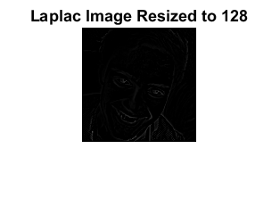 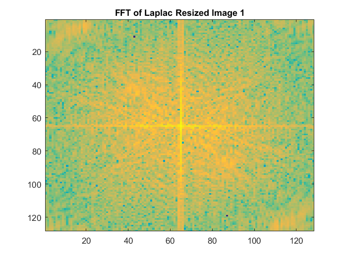 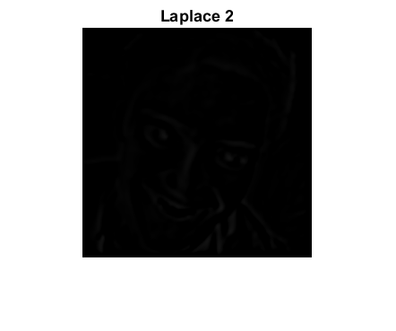 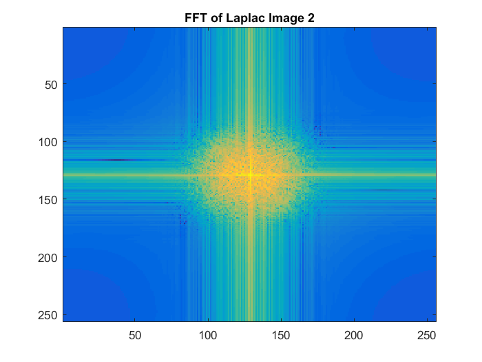
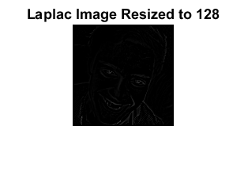 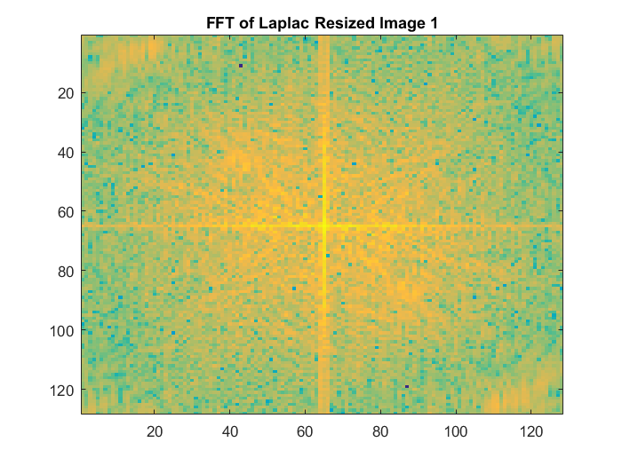 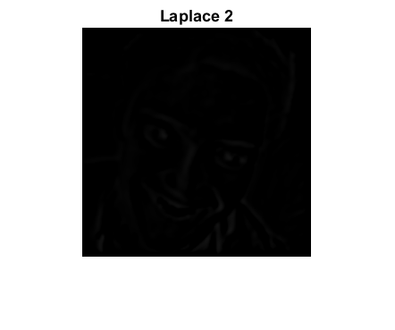 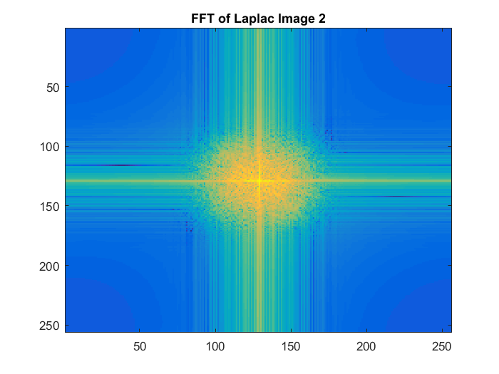 


 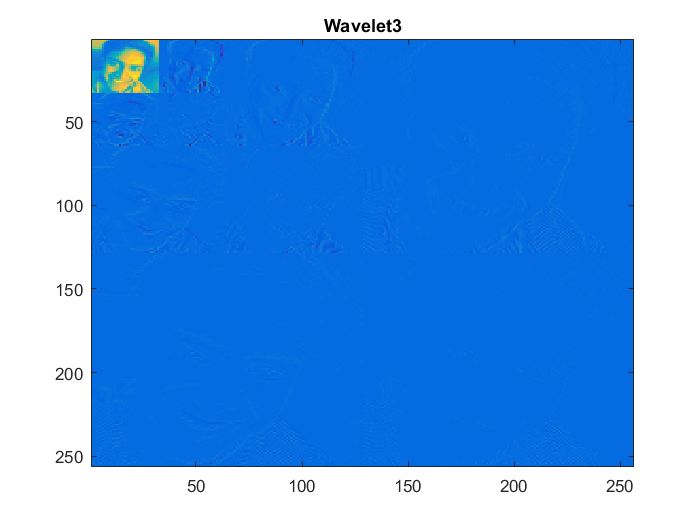
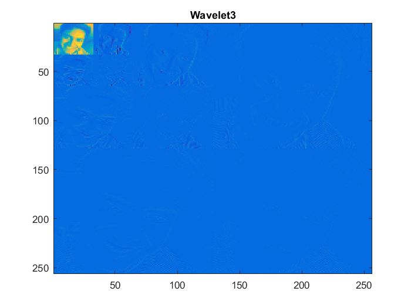 
 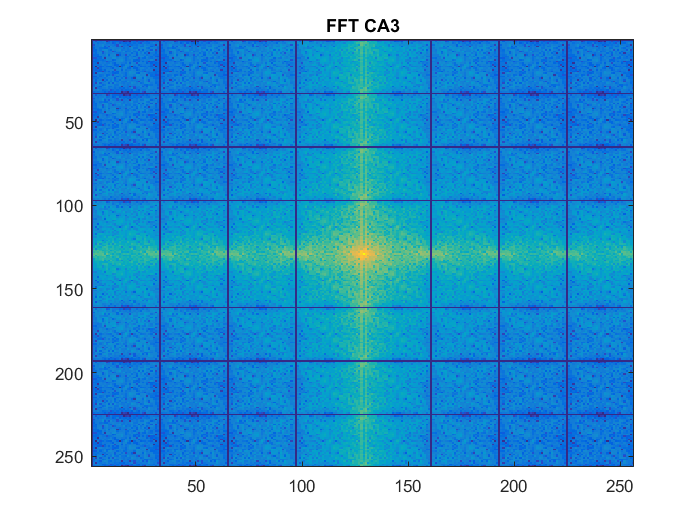
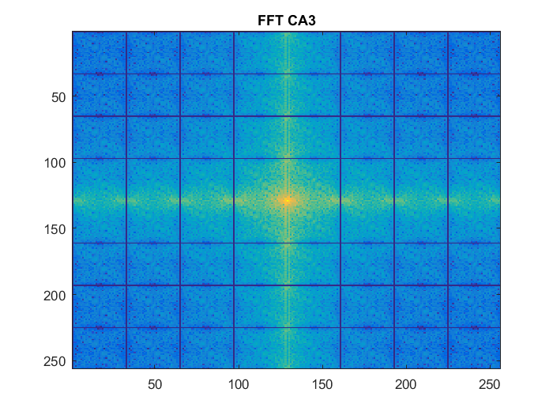